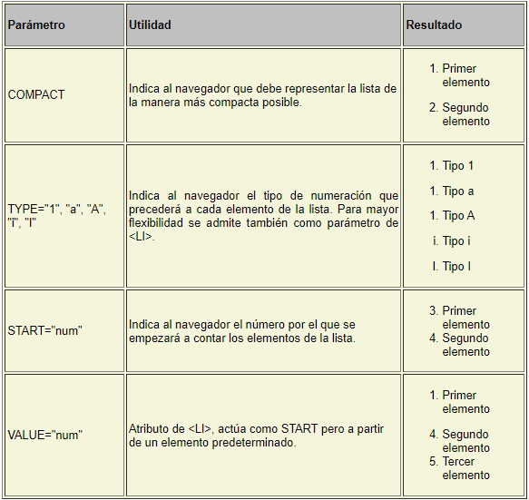

Este sitio ha sido creado para brindar información de los temas relacionados en el título.
Flex Box
El módulo de diseño de caja flexible, más conocido como flexbox , es una herramienta poderosa para crear diseños con CSS. No es tan poderoso como CSS Grid, que veremos en el Capítulo 12 , pero puede resolver muchos problemas de diseño. Flexbox es un diseño unidimensional que puede diseñar elementos tanto horizontal como verticalmente (pero no ambos). Un elemento que usa flexbox como su diseño se denomina contenedor flexible , y los elementos dentro de él son elementos flexibles .
Attardi, J. (2020). Caja flexible. En Modern CSS (págs. 205-228). Apress, Berkeley, CA.
https://link.springer.com/chapter/10.1007/978-1-4842-6294-8_10
Listas y Enlaces
Según Rafael Menéndez-Barzanallana Asensio. Departamento Informática y Sistemas. Universidad de Murcia (2014), Existen varios tipos de listas en HTML. Todas ellas se pueden meter unas dentro de otras formando árboles. Todos los tipos siguen el siguiente formato:
tipo_lista puede ser una de las siguientes: DIR, DL, MENU, OL y UL.
Listas desordenadas La etiqueta
nos permite presentar listas de elementos sin orden alguno. Cada elemento de la lista irá normalmente precedido por un círculo. Por ejemplo,
se verá como
Primer elemento
Segundo elemento
La etiqueta < UL > admite estos parámetros:
También son listas desordenadas aquellas que utilizan las etiquetas < DIR > y < MENU >. En principio tenían como propósito representar una lista estilo directorio (multicolumna) o tipo menú (una sola columna). En la práctica los navegadores lo han implementado como sinonimos de < UL >.
Listas ordenadas
La etiqueta < OL > nos permite presentar listas de elementos ordenados de menor a mayor. Normalmente cada elemento de la lista irá precedido por su número en el orden. Por ejemplo:
se verá como
1. Primer elemento
2. Segundo elemento
La etiqueta < OL > admite estos parámetros:

Listas de definiciones
Este es el único tipo de lista que no utiliza la etiqueta < LI >. Al tener como objetivo presentar una lista de definiciones, de modo que tiene que representar de manera distinta el objeto definido y la definición. Esto se hace por medio de las etiquetas < DT > y < DD >:
Enlaces
Las siglas HTML significan HyperText Markup Language, lo que para nosotros quiere decir que es un lenguaje para hipertexto. Existen múltiples formatos de hipertexto (por ejemplo, los ficheros de ayuda de algunos programas).
Un enlace es una zona de texto o gráficos que si son seleccionados nos trasladan a otro documento de hipertexto o a otra posición dentro del documento actual. Siendo HTML el lenguaje habitual en internet, la diferencia que posee con respecto a otros tipos de hipertexto es que ese otro documento puede estar físicamente en la otra punta del planeta. Son los enlaces lo que hacen de la telaraña o World Wide Web lo que es.
La etiqueta < A >
Para incorporar un enlace hay que utilizar esta etiqueta. Todo lo que encerremos entre y , ya sea texto o imágenes, será considerado como enlace y sufrirá dos modificaciones:
Se visualizará de manera distinta en el navegador. El texto aparecerá habitualmente subrayado y de un color distinto al habitual, y las imágenes estarán rodeadas por un borde del mismo color que el del texto del enlace.
Al pulsar sobre el enlace, seremos enviados al documento que apuntaba el enlace.
Para que el enlace sirva para algo debemos especificarle una dirección. Lo haremos de la siguiente manera: < A HREF="direccion">Pulsar aquí
La dirección estará en formato URL (Uniform Resource Locator).
Las URLs
Una URL nos indica tanto una dirección de Internet como el servicio que esperamos nos ofrezca el servidor al que corresponde la dirección. Tiene el siguiente formato:
servicio://máquina:puerto/ruta/fichero@usuario
Donde el servicio podrá ser uno de los siguientes:
La dirección de la máquina puede ser, o bien una serie de cuatro números entre 0 y 255 (ej. 123.3.5.65) o bien algo más fácil de recordar como es una serie de palabras separadas por puntos (www.um.es). El puerto generalmente no se indica, ya que el servicio predetermina uno.
La ruta es una serie de directorios separados por el símbolo /, que es el utilizado en LINUX (el sistema operativo más extendido en los servidores de Internet). Existe otro formato de URL. Cuando queremos acceder a un fichero situado en la misma máquina que la página web que estamos creando podemos utilizar este formato, ruta_relativa/fichero En la ruta relativa podremos utilizar dos puntos (..) para acceder al directorio padre o comenzar con la barra diagonal (/) para acceder a una ruta absoluta dentro de nuestro ordenador.